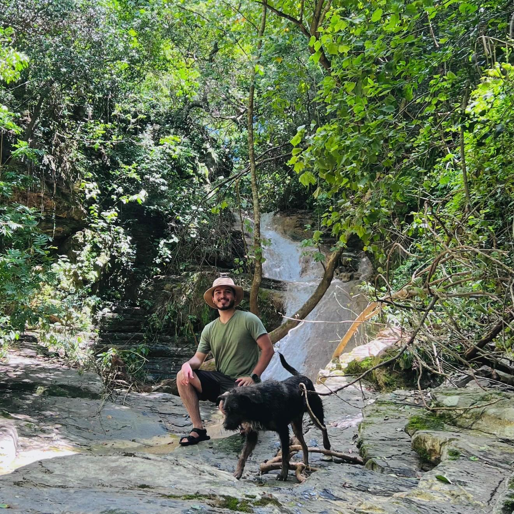

Dionicio Flores Camacho
Software & Web developer
Task automation, software features
About
I am Dionicio Flores, a young professional with a strong interest in the technology industry, especially software and web application development. I understand that nowadays, knowing how to solve digital problems is fundamental for business, communication, automation, and making tasks easier for users rather than spending excessive time on manual work. I also understand that the tech industry is constantly changing and evolving, so continuous learning is a key factor for success in this field.
I completed a Bachelor’s degree in Computer Science, which I consider fundamental for understanding the core concepts of the digital world and applying them in real-world development. My primary interest is web development, an essential asset for businesses that helps reduce manual work and improve efficiency.
Outside the tech field, I enjoy photography, hiking, traveling, and cooking.
Skills
I have experience in software and web development using programming languages such as Java, Python, C++, and SQL. I am familiar with object-oriented programming, data structures, and database design. I also have an understanding of software engineering principles, including testing, debugging, and basic system design.
On the web development side, I am comfortable working with HTML, CSS, and JavaScript to build responsive and functional web pages. I continue to improve my skills through personal projects and coursework, with a focus on writing clean, efficient, and maintainable code.
Photography & Editiong
I alwasy had a a interest of capuring memorable moments from events and family. Alsoc capurint landscapes, places, trips and more. Bur that is not it editing is also importan to delivier quality and capuring the ecesnce. at the same i do with recording vieos and shareing them.
Traveling & Hiking

I love traveling for vacation and family. I visit diverse palces one of them is Mexico. Part of the trips i made are for hiking and ejoiy of the geopgrapy of the places
Cooking
I also Love cooking. I like to try new food and replicate it home if I like it. I have no problem on cooking since I had worke on a restourant cooking, drinks and more